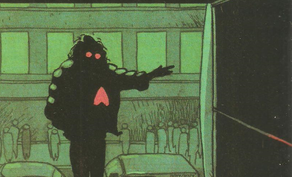

A reprinting of the series from Blast! Lazarus is an ennui-filled immortal with a death wish.
Art by D'Israeli
| Story Title | Parts | Pages | w indicates a wraparound coverCovers | Year(s) | Issues | Writer | Artist | Colourist | Letterer |
|---|---|---|---|---|---|---|---|---|---|
| The Virtual Kiss | 2 | 39 | 0 | 2001 | M4.01-M4.02 | Warren Ellis | D'Israeli | <-- | D'Israeli |
| Alraune | 1 | 8 | 0 | 2001 | M4.02 | Warren Ellis | D'Israeli | <-- | D'Israeli |
| Lucy | 1 | 9 | 0 | 2001 | M4.03 | Warren Ellis | D'Israeli | <-- | D'Israeli |
| Women | 1 | 15 | 0 | 2001 | M4.03 | Warren Ellis | D'Israeli | <-- | D'Israeli |
| Inspector Sleep | 1 | 34 | 0 | 2001 | M4.04 | Warren Ellis | D'Israeli | <-- | Mary Green |
| Finality | 1 | 12 | 0 | 2001 | M4.05 | Warren Ellis | D'Israeli | <-- | D'Israeli |
| year | episodes | pages |
| 1991 | 0 | 0 |
| 1992 | 0 | 0 |
| 1993 | 0 | 0 |
| 1994 | 0 | 0 |
| 1995 | 0 | 0 |
| 1996 | 0 | 0 |
| 1997 | 0 | 0 |
| 1998 | 0 | 0 |
| 1999 | 0 | 0 |
| 2000 | 0 | 0 |
| 2001 | 7 | 117 |
| 2002 | 0 | 0 |
| 2003 | 0 | 0 |
| 2004 | 0 | 0 |
| 2005 | 0 | 0 |
| 2006 | 0 | 0 |
| 2007 | 0 | 0 |
| 2008 | 0 | 0 |
| 2009 | 0 | 0 |
| 2010 | 0 | 0 |
| 2011 | 0 | 0 |
Core comic strip data (excludes other content):